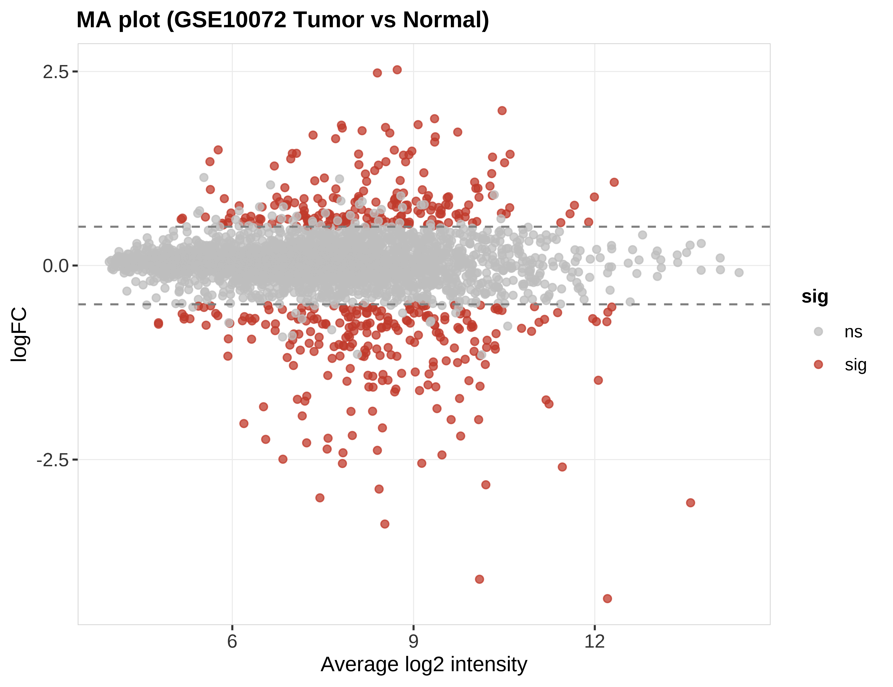
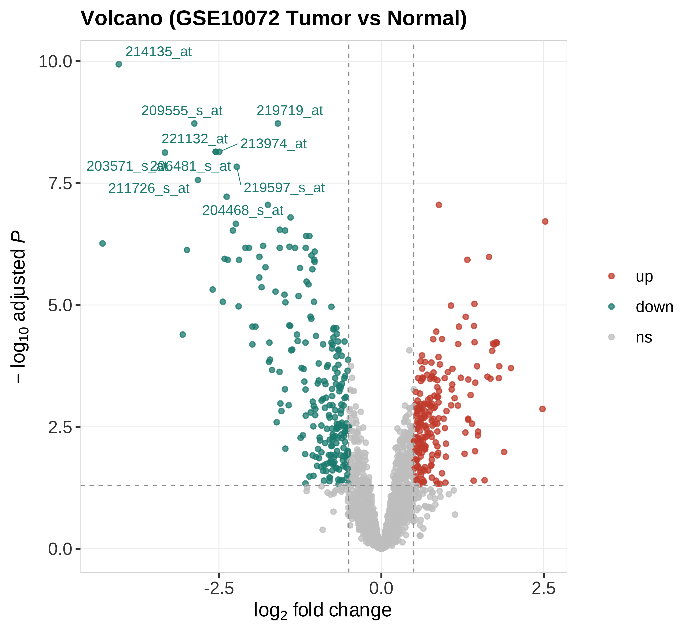

状态：PASS
已 source 本技能 脚本_scripts/: 工具_GEO系列矩阵解析_GeoSeriesMatrix.R, 运行骨架_runSkeleton.R
data_provenance: REAL — GEO GSE10072 Affymetrix 子集。
series n=107 (Tumor=58, Normal=49); analysis subset n=20.
"skill","stage","n_rows","n_cols","n_samples","group_source","toy","data_provenance","accession","sourced_skill_scripts","notes","checked_at" "Microarray","post",3000,20,20,"GSE10072 Affymetrix; Tumor vs Normal",FALSE,"REAL","GSE10072","已 source 本技能 脚本_scripts/: 工具_GEO系列矩阵解析_GeoSeriesMatrix.R, 运行骨架_runSkeleton.R","REAL microarray limma; MA plot","2026-07-19 13:18:34"


REAL GSE10072 microarray limma MA + journal volcano. accession=GSE10072; series_n=107; subset_n=20.
生成时间：2026-07-19 13:18:37 · 报告规范：统一交付规范_DeliveryStandards · 版本 v1